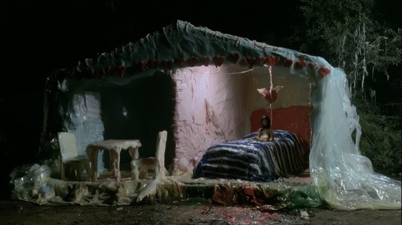

Helvetica y parecidas, con títulos en mayúscula.
Diseño identidades y universos visuales para artistas, proyectos culturales y productoras audiovisuales. Mi práctica cruza diseño, imagen, fotografía y cultura.

Plaquette a partir de un fragmento de Pensar/Clasificar, de Georges Perec.